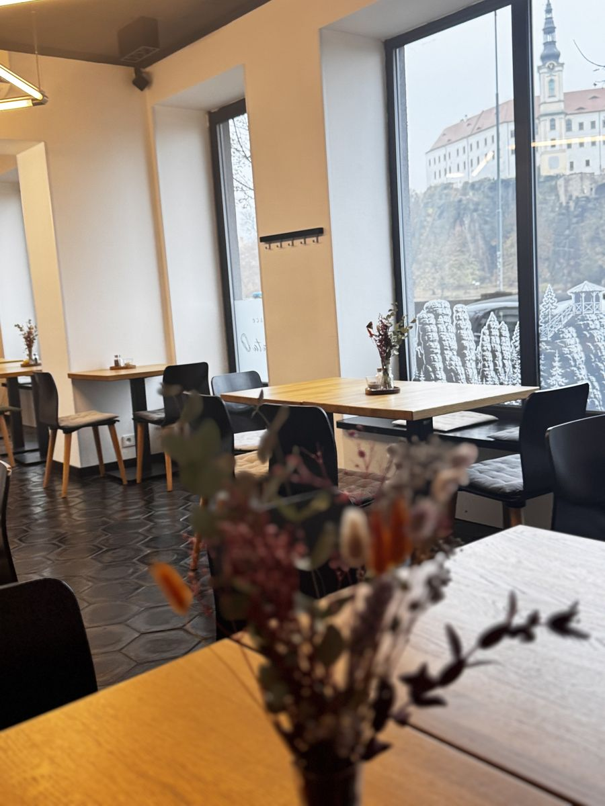
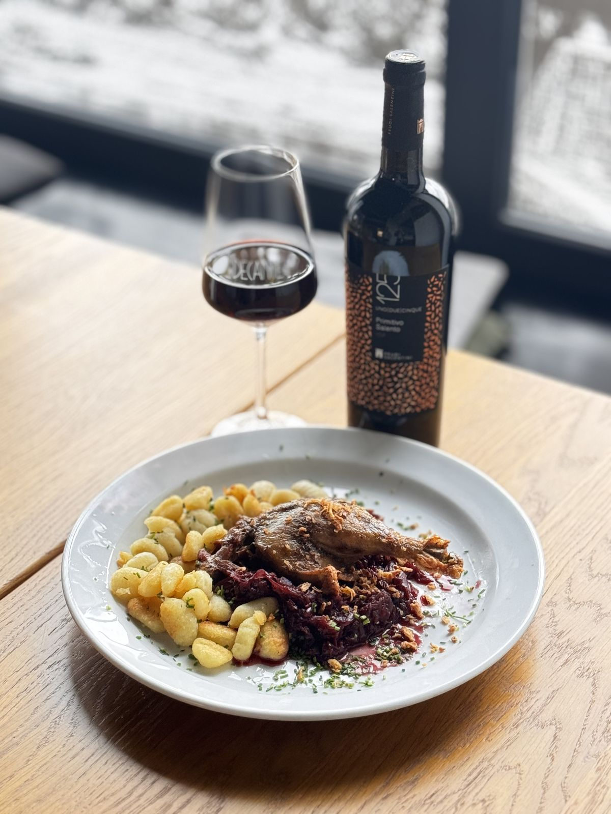
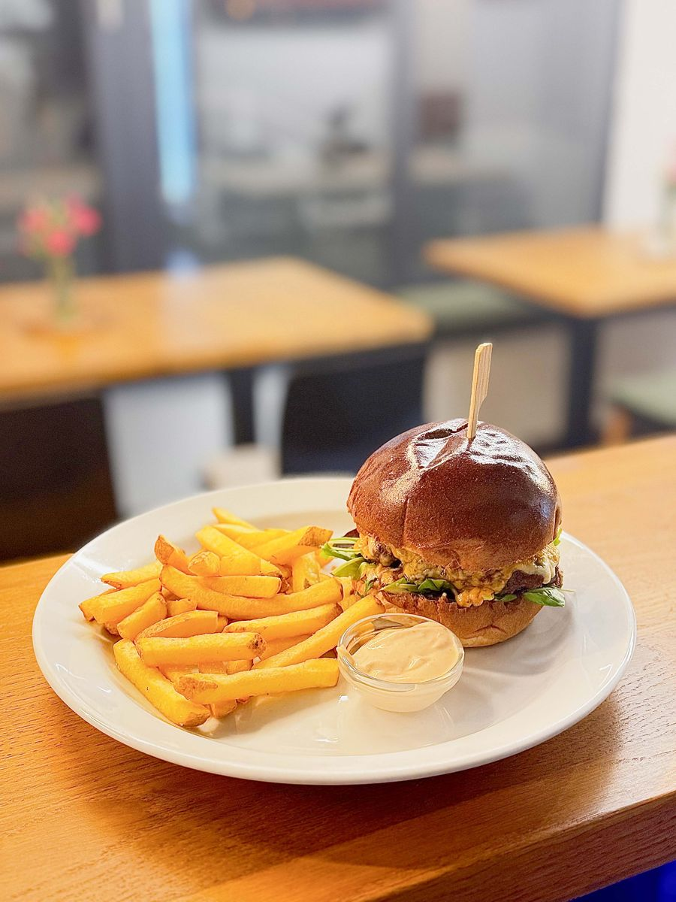
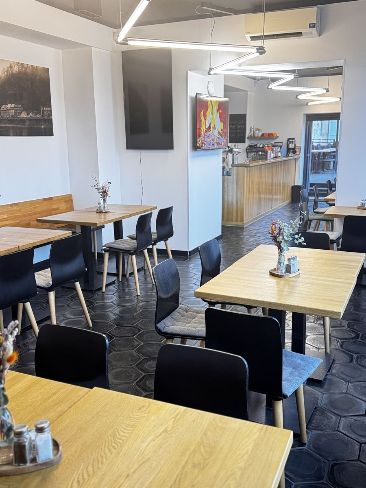
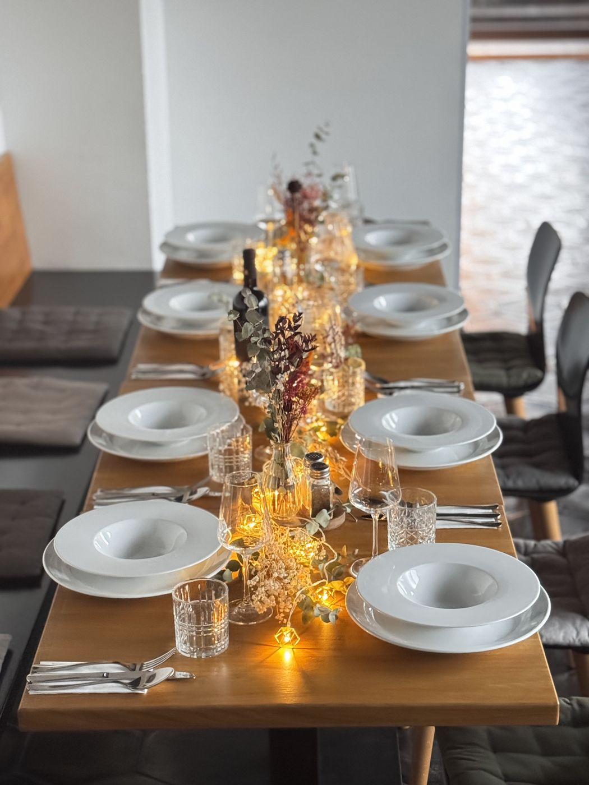

A culinary experience with a view of Děčín Castle
A restaurant on the ground floor of Penzion Via Ferrata on the Elbe embankment. We cook great food and, above all, honest food.
About us
Great food, and above all honest food
We are a family restaurant and the sister business of Penzion Via Ferrata. We cook the way we like to eat: proper portions, flavour you can rely on and no shortcuts.
Drop in for the lunch menu, dinner with friends or just a coffee on the terrace. Climbers make their way up the via ferrata above you, and across the Elbe you look straight at Děčín Castle.


A terrace below the rock
From the terrace you can watch climbers on the via ferrata right above you. In summer, the best seat in Děčín.

Castle views
Inside and out, the Elbe and Děčín Castle are right in front of you. A calm place for a good conversation.

Breakfast for guesthouse guests
Guests of Penzion Via Ferrata get breakfast every day from 8:00 to 10:00.





Private hire
The whole restaurant, just for your party
Birthdays, company parties or family get-togethers. Hire the whole place, terrace included, and leave the food and drinks to us.
40 guests inside · plus the terrace
- Birthdays and anniversaries
- Company events
- Family celebrations
- Christenings and weddings

Reviews
What our guests say
„I really enjoyed the roast duck, it was excellent. I recommend it to everyone, a great place where they take excellent care of their guests.“
Google, a month ago · translated
„An amazing view that is worth sitting down for. Prices are reasonable for the location, and the food is excellent. Kulajda, pasta and burger. Coffee like in Italy.“
Google, 3 months ago · translated
„We came here spontaneously and found it to be very nice. The food was delicious and our waitress was very friendly and helpful. We would recommend.“
Google, 4 months ago
Contact
We look forward to seeing you
- AddressLabské nábřeží 317/19, 405 02 Děčín 2
- Phone+420 793 325 970
- Emailrestaurace@penzionferrata.cz
- ParkingFree street parking
Opening hours
| Monday | 11:30–22:00 |
| Tuesday | 11:30–22:00 |
| Wednesday | 11:30–22:00 |
| Thursday | 11:30–22:00 |
| Friday | 11:30–22:00 |
| Saturday | 11:30–22:00 |
| Sunday | 11:30–22:00 |
Breakfast is for guesthouse guests only, daily 8:00–10:00.